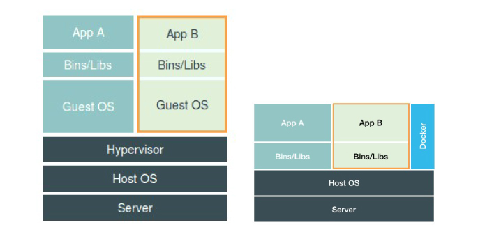
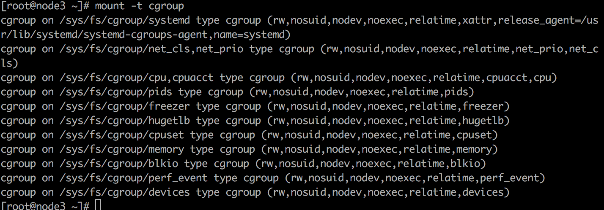
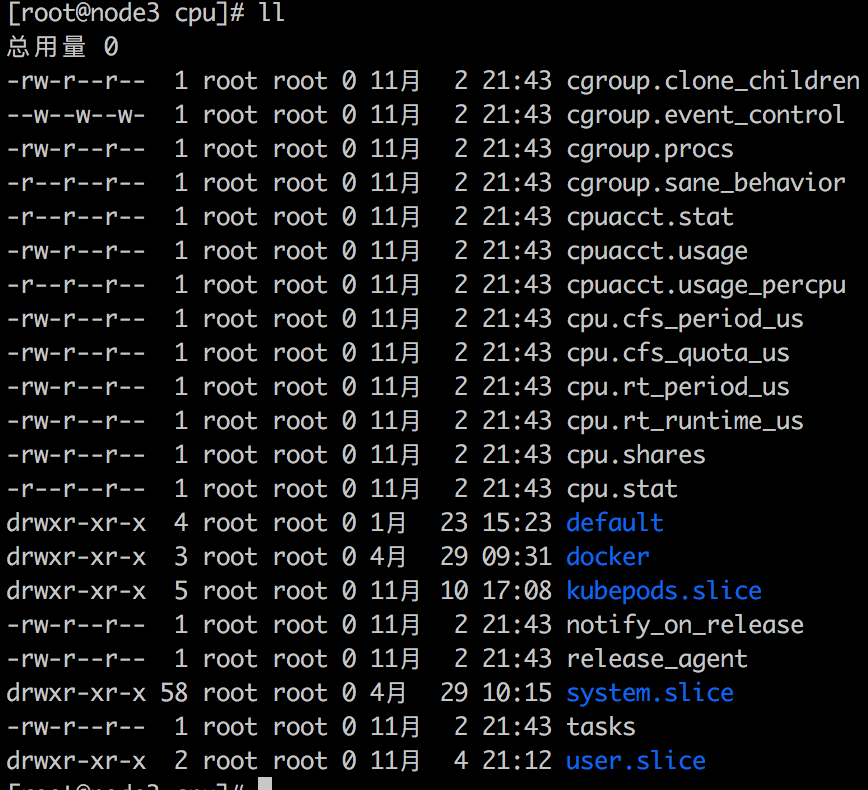
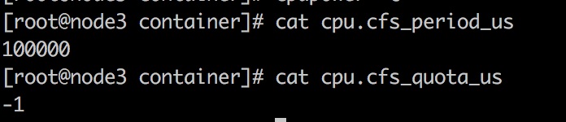
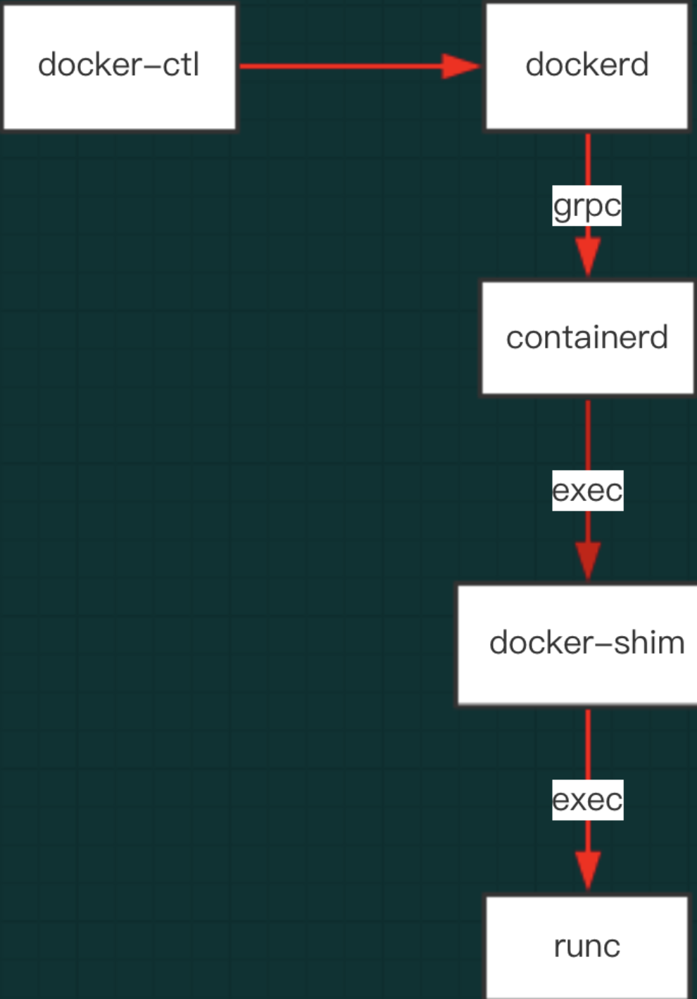

Docker Element Knowledge
@(1.1 kubernetes)[容器] > 大家都知道容器技术实际上就是运用了linux3.10版本以上的 cgroup、namespaces功能。那么如何理解这个cgroup呢？为什么会用到这两个功能就可以是实现容器呢？
应用运行的基础—进程
1+1=2 在计算机背后到底发生了什么？
1+1=2 是一个最简单的程序，但是很多学计算机的同学都不一定说得清楚1+1=2这整个过程在计算内到底是怎么运行的。
程序的输入的数据可以来自于磁盘上的文件、输出结果也可以放在磁盘上的文件。无论使用什么样的高级语言，最终都会转译成计算机认识的 二进制文件（0、1编码文件）
对于操作系统来说，首先从程序中发现输入数据来自于磁盘文件。所以，操作系统回去将读取文件中内容放在内存中待命。当程序读取 + 操作时，它需要 CPU 加法指令完成操作。当 CPU 与 内存协同工作时，会使用到寄存器存放数值、内存堆栈保存待执行的命令和变量。同时计算机中还有待打开的文件、各种各样的 I/0 设备，一起协同工作。
结论：
进程的理解：当1+1这个程序运行起来的时候，计算机内存的数据、寄存器的值、堆栈的指令、被打开的文件、以及各种设备状态信息的总和，就是进程。
容器技术就是 通过 约束 和 修改进程的动态表现（试图） 为进程创造出边界。
容器 跟 虚拟机有什么区别？
容器跟虚拟机的区别是每次面试必问的题目。这里再重新提一下。
1、从体系结构上讲 
虚拟机提供了Hypervisor 层，它通过硬件虚拟化功能，模拟出了一个操作系统运行所需要的各种硬件，比喻 CPU、内存、I/O设备、网络、存储设备。然后基于这些硬件安装新的操作系统GuestOS。 容器提供了一个docker engine 对运行的进程进行 隔离和修改试图 创造边界。
2、从特性上讲 启动时间、镜像大小、不一样。
3、内核安全性讲。
一些课程留言的问题
1、linux 上的clone()创建的是进程还是线程，有什么关系？ 答：clone函数创建的是线程，linux的线程是通过进程实现的。
2、既然容器里面跑的是单进程，那如果一个镜像里面有jdk、netstat、ping等，虽然启动的是java进程，但是可以在容器里运行各种命令，那这些命令在容器运行的过程中也在“宿主机”上运行吗？ 答：这些进程都是运行在宿主机上的，但是不受docker控制，就像是野孩子。单进程的意思不是只能运行一个进程，而是只能控制一个进程。
3、容器的运行没有自己的内核、且依赖linux的的内核。那么 mac、windows上的容器启动是什么机制？ 答：mac、windows的容器，实际上是启动了一个虚拟机。容器运行在虚拟机的内核上。
4、在容器内，除了pid=1的进程，其他进程不受docker控制。这个控制指的是什么？其他进程与pid=1的进程有什么关系？ 控制指的是进程的回收和生命周期的管理。
5、在pod（单容器场景）中，以CMD方式启动脚本，配置了pod的prestop、poststart。这种情况下的prestop、poststart 怎么控制？ 答：它们都是 pid=1 进程的子进程。
6、namespace 虽然可以隔离不同进程。但是有些资源是无法隔离的，比喻说时间资源。然后不同进程共享宿主机内核，很有可能出现“越狱”现象。
Cgroups
在 Linux 中，Cgroups 给用户暴露的是文件系统，即以文件和目录的方式组织在操作系统的 /sys/fs/cgroup路径下。

可以看到下面有 cpuset、cpu、memory 这样的子目录，也叫子系统。这些都是当前机器可以被 cgroups 限制的种类。在对应的资源种类下，可以看到具体的被限制的方式。可以看到 cpu 子系统有如下可操作方法

其中 cfs_period 和 cfs_quota 这样的关键词，表示的意思是 在长度为 cfs_period 的时间段内，只能分配到总量为 cfs_quota 的 cpu 时间。

查看 cpu.cfs_period_us 默认为 100ms（也就是 100000） cpu.cfs.quota_us 默认为1 表示没有限制。
容器监控方案
对于 linux 上的监控命令 top free df 命令所展示出来的监控信息，本质上是读取 /proc 目录下的文件。
著名的 lxcfs 项目的也是这个原理。 kuberntes 监控方案 cadvisor、promuthus 也是这个方案。
关于 Cgroups 项目的问题
1、cgroups 能够限制资源上限、能否锁定下限？如果不能，那不是很容器抢占资源？ 答：只有上限，所以需要 kubernetes 来进行调度。
2、容器内部还能做 namespae 和 cgroup 吗？也就是在 容器中再做docker？ 答：可以在容器中继续在做docker。不过需要再挂载对应的文件系统，开启需要的权限。
3、如果docker run 没有限定 cpu quota，默认情况下不限制的吧？ 答：是的
4、docker 实现的原理仅是调用了底层的namespace 和 cgroup吗？然后加上一下特性 答：准确的说，是调用了containerd + runc。这个问题涉及到docker、dockerd、containerd、docker-shim、runc 之间的关系。如下： 
容器镜像技术
容器镜像是容器进程所能看到的文件系统。它用到了 mount 的 namespace 技术。
chroot 与 pivot_root 命令有什么不同？
通常的 /bin/bash 是一个链接文件，它的运行依赖于 /lib64/下的一些 .iso 文件。
[root@node3 lib64]# ll
总用量 3256
-rwxr-xr-x 1 root root 164240 4月 30 09:39 ld-linux-x86-64.so.2
-rwxr-xr-x 1 root root 37056 4月 30 09:39 libacl.so.1
-rwxr-xr-x 1 root root 19896 4月 30 09:39 libattr.so.1
-rwxr-xr-x 1 root root 20032 4月 30 09:39 libcap.so.2
-rwxr-xr-x 1 root root 2173512 4月 30 09:39 libc.so.6
-rwxr-xr-x 1 root root 19776 4月 30 09:39 libdl.so.2
-rwxr-xr-x 1 root root 402384 4月 30 09:39 libpcre.so.1
-rwxr-xr-x 1 root root 144792 4月 30 09:39 libpthread.so.0
-rwxr-xr-x 1 root root 155784 4月 30 09:39 libselinux.so.1
-rwxr-xr-x 1 root root 174576 4月 30 09:41 libtinfo.so.5
由于在 chroot 之后，需要用到 /bin/bash 命令，所以需要提前将 bash 命令所依赖的 .iso 文件拷贝 $new-path/lib64下。
pivot_root：改变 root 文件系统。docker 容器中真实使用的是 pivot_root命令。
- rootfs 只是一个操作系统所包含的文件、配置和目录，并不包括操作系统的内核。而实际上，在 Linux 操作系统中，这两部分是分开放的，操作系统只有开机启动才会加载指定版本的内核镜像。